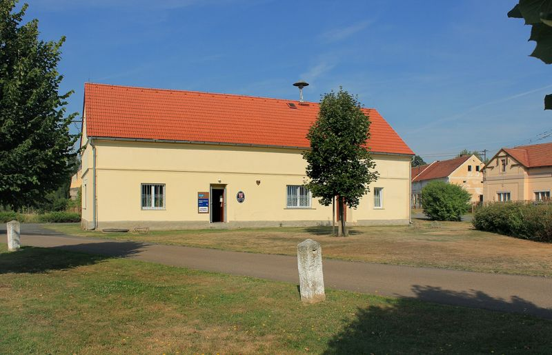

Obecní úřad
Úřední hodiny, povinné informace, e-podatelna, územní plán a dokumenty ke stažení.
Úřední hodiny
Úřední hodiny- Pondělí8:00 – 17:00starosta 9:00 – 12:00
- Středa8:00 – 17:00starosta 10:00 – 12:00
Po předchozí telefonické domluvě lze sjednat schůzku se starostou i mimo úřední hodiny.

Vedení obce
Zastupitelstvo má sedm členů. Při zastupitelstvu pracuje finanční a kontrolní výbor. Usnesení z veřejných zasedání najdete na úřední desce.
Dokumenty ke stažení
Rozpočty, závěrečné účty a vyhlášky jsou na úřední desce.
Územní plán obce Kotovice
Územní plán – jednotný standard + úplné znění po změně č. 1. Změna č. 1 (převod do JS) byla spolufinancována z prostředků státního rozpočtu ČR z programu Ministerstva pro místní rozvoj ČR.
Dotace na domácí čistírnu odpadních vod
Obec podporuje z rozpočtu výstavbu domácích čistíren odpadních vod (DČOV). Podmínky a žádost:
E-podatelna
| Adresa pro doručování | Obec Kotovice, Kotovice 22, 333 01 Kotovice |
|---|---|
| ID datové schránky | f4pb6r7 |
| Elektronická adresa podatelny | obec.kotovice@volny.cz |
| Hodiny podatelny | Po 8:00–15:30 · Út 8:00–14:00 · St 8:00–17:00 · Pá 8:00–12:00 |
| Přijímané formáty | PDF, DOC, DOCX, TXT, JPG/JPEG, PNG, XLS, XLSX (i zabalené v ZIP), max. 15 MB |
| Fyzické nosiče | flash disk, CD-ROM, DVD-ROM |
Datovou zprávu v chybném formátu nebo se škodlivým programem úřad nezpracuje, pokud se vadu nepodaří odstranit ve spolupráci s odesílatelem. Totéž platí pro neúplný nebo poškozený dokument. Podání podle § 37 správního řádu musí obsahovat, kdo je činí, které věci se týká a co se navrhuje.
Povinné informace
Informace zveřejňované podle zákona č. 106/1999 Sb., o svobodném přístupu k informacím.
| 1. Název | Obec Kotovice |
|---|---|
| 2. Důvod a způsob založení | Obec vznikla podle zákona č. 367/1990 Sb., o obcích, dnem voleb do obecního zastupitelstva v roce 1990. Funkce vykonává podle zákona č. 128/2000 Sb. |
| 3. Organizační struktura | Zastupitelstvo, finanční výbor, kontrolní výbor |
| 4. Kontaktní spojení | Kotovice 22, 333 01 Kotovice · tel. 377 880 004, 724 187 805 · obec.kotovice@volny.cz |
| 4.3 Úřední hodiny | Pondělí a středa 8:00–17:00 |
| 4.8 Datová schránka | f4pb6r7 |
| 5. Bankovní spojení | 19423361/0100, Komerční banka, a.s. |
| 6. IČO | 00574023 |
| 7. Plátce DPH | Nejsme plátci DPH |
| 8. Rozpočet | Úřední deska – rozpočet |
| 9. Žádosti o informace | Ústně v kanceláři úřadu, písemně osobně nebo poštou na adresu úřadu, e-mailem, datovou schránkou f4pb6r7 nebo telefonicky na 724 187 805. |
Lhůty podle zákona 106/1999 Sb.
- Odkaz na zveřejněnou informaci – 7 dnů
- Výzva k upřesnění nesrozumitelné nebo příliš obecné žádosti – 7 dnů
- Odložení žádosti mimo působnost úřadu – 7 dnů
- Poskytnutí informace žadateli – 15 dnů
Úplné znění povinných informací · Výroční zprávy a odpovědi na žádosti
Ochrana osobních údajů (GDPR)
Službu pověřence pro obec Kotovice vykonává Mikroregion Radbuza prostřednictvím MAS Radbuza, z.s., konkrétně Mgr. et Mgr. Miroslav Šuma, nám. ČSA 24, 333 01 Stod.
| Telefon | 720 021 963, 725 830 833 |
|---|---|
| gdpr@mas-radbuza.cz | |
| Správce údajů | Obec Kotovice, Kotovice č. 22, 333 01 Stod, IČ 00574023 |